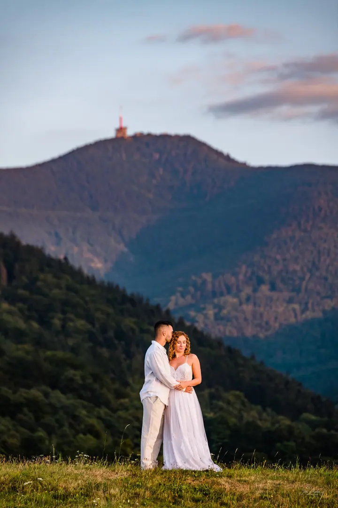
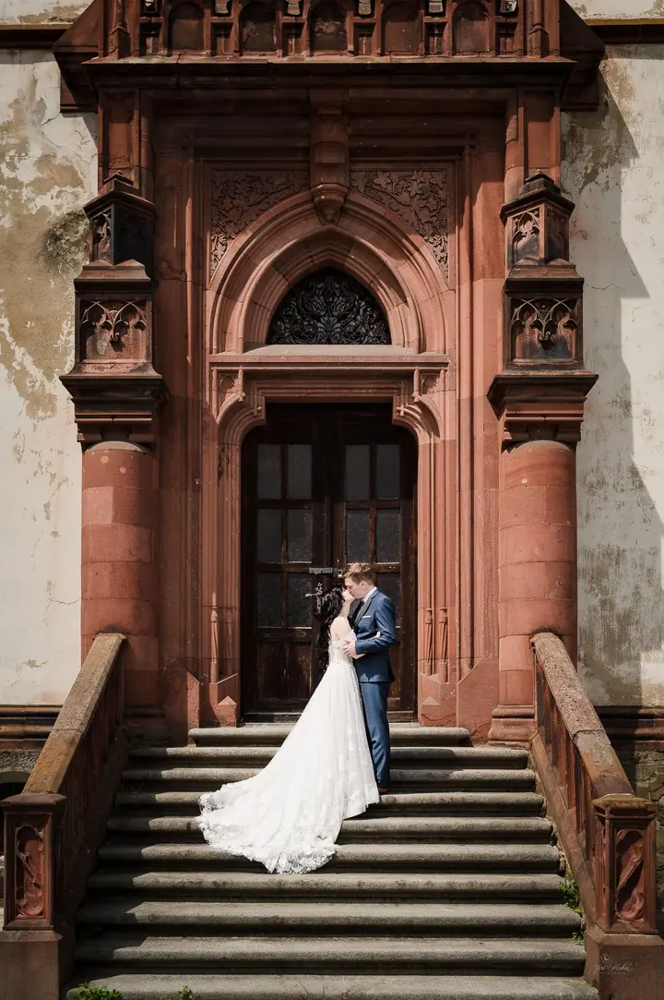
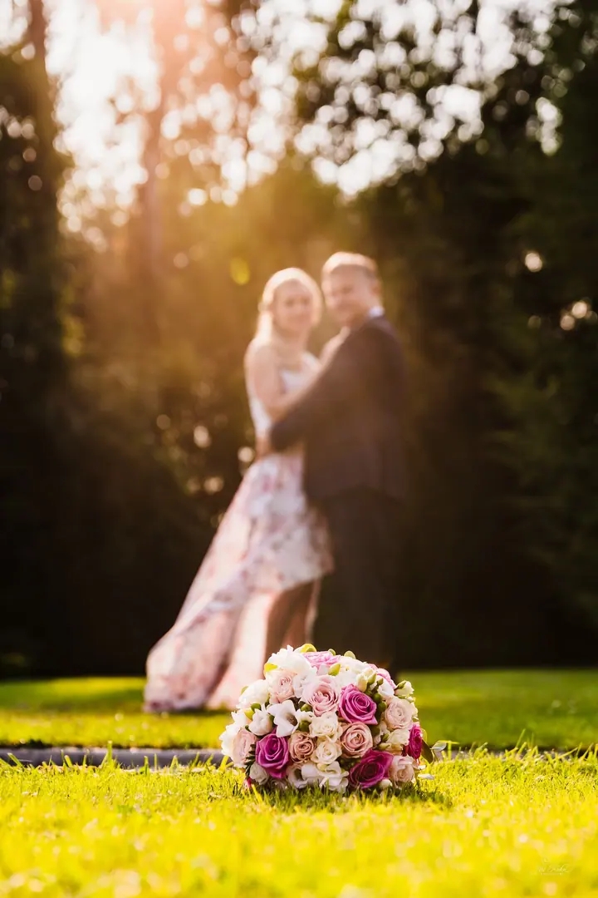
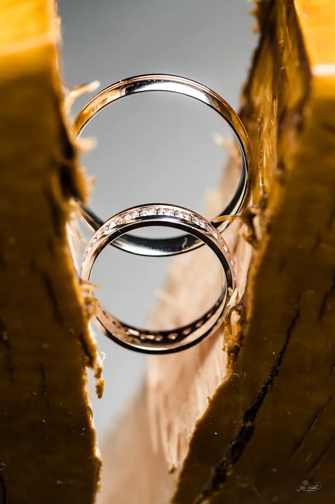

jedna
Focení svatby
Svatební den fotím od brzkého rána do pozdního večera, od příprav přes obřad až po večerní oslavu. V tu chvíli jsem napůl fotograf a napůl svatební koordinátor.

Svatební fotograf · Ostrava, Opava, Moravskoslezský kraj

Jmenuji se Jiří Kuhn a jako svatební fotograf působím v Ostravě, Opavě a po celém Moravskoslezském kraji. Kromě svatebního dne s vámi rád nafotím i předsvatební nebo posvatební focení. Na závěr z fotek připravím svatební fotoknihu, ke které se budete roky vracet.
Více o mně
Co fotím
jedna
Svatební den fotím od brzkého rána do pozdního večera, od příprav přes obřad až po večerní oslavu. V tu chvíli jsem napůl fotograf a napůl svatební koordinátor.
dvě
Společné focení před svatbou, při kterém se poznáme a vyzkoušíte si, jaké je být před objektivem. Ve svatební den už pak budete v klidu.
tři
Klidné focení v šatech a obleku bez spěchu svatebního dne, třeba na louce v zapadajícím slunci nebo v horách.
Z vašich fotek připravím svatební fotoknihu, fotoobrazy nebo tisk, aby vzpomínky nezůstaly jen v počítači.
Každá svatba si zaslouží trvalé vzpomínky


Za objektivem
Věřím, že jen poctivou prací vznikne něco trvalého. Tak jako most potřebuje pevné pilíře, aby vydržel staletí, i fotky, ke kterým se budete vracet ještě po letech, musí stát na řemeslně zručné a poctivé práci. „Docela dobré“ ve svém slovníku nemám.
Na svatbě se na krátký čas stávám součástí vaší rodiny. Od první předsvatební konzultace až po předání fotek a fotoknihy se snažím otevřeně a upřímně komunikovat, abych dobře pochopil, co si představujete. Na vaší spokojenosti mi opravdu záleží.
Prošel jsem už desítkami svateb, a tak se považuji napůl za fotografa a napůl za svatebního koordinátora. Umím reagovat na počasí, místo, hosty i nečekané změny v programu. Ve všem, co dělám, mě vede laskavost, porozumění a respekt.
Jiří
Sejdeme se a probereme, jak bude váš den vypadat, co je pro vás důležité a jaké máte přání. Na základě toho vám připravím cenovou nabídku.
Pokud chcete, vyrazíme spolu fotit ještě před svatbou. Poznáme se a ve svatební den už se před objektivem budete cítit přirozeně.
Jsem s vámi od příprav až do večera. Fotím momentky i společné fotky a pomáhám, aby vše šlo hladce podle plánu.
Fotky pečlivě upravím a předám vám je. Když budete chtít, připravím z nich i svatební fotoknihu nebo fotoobrazy.
Portfolio
Otázky
Působím hlavně v Ostravě a Opavě a fotím po celém Moravskoslezském kraji. Pokud plánujete svatbu jinde, napište mi a domluvíme se.
Amatérovi se fotky povést mohou, ale nemusí. Profesionál je vázán smlouvou i svou pověstí, a díky zkušenostem z řady svateb si poradí s počasím, místem i nečekanými situacemi.
Rád. Na svatbách se považuji napůl za fotografa a napůl za koordinátora, takže vám poradím s harmonogramem i s tím, kde a kdy fotit. Na webu najdete také tipy k místům a organizaci svatby.
Každá svatba je jiná, proto vám cenovou nabídku připravím na míru. Stačí mi napsat termín, místo a co byste rádi nafotili. Když máte nějaké speciální přání, nebojte se ho zmínit.
Napište pár vět o tom, co si představujete. · +420 777 874 772